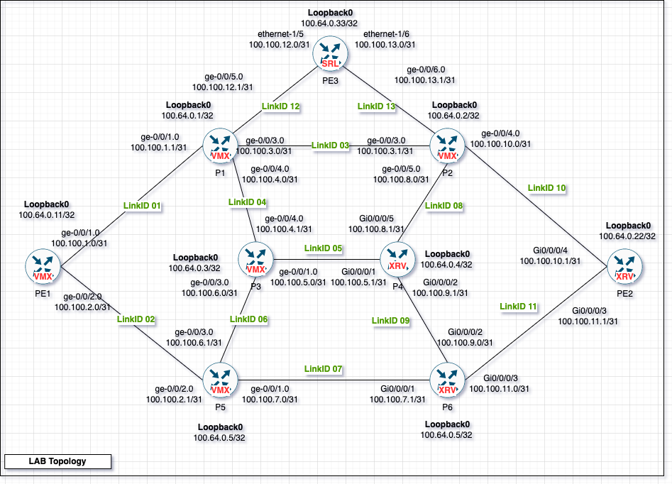

gNMI Network Automation (1/3) : Simulating network topologies with ContainerLab
Table Of Contents
Introduction
Like many network engineers, I used to use EVE-NG (or GNS3) to test lab topologies and configurations.Instead of having to control the configuration using the EVE-NG platform, 2 tools available, ContainrLab & vrnetlab enables you to run your most used Network devices in a Docker container platform of your choice, this opens up all the automation tools available for Docker and K8S.
But beware, unlike traditional containers which replaces the resource intensive Virtual Machine with only the needed parts inside a container form, here are only converting those VM to run as VM emulating container, so those containers will use the same amount of resource as the EVE-NG VM if not a little bit more, but you get to optimize the deplyment of these labs.
Simply why would you use this ? Answer, you Network lab acts like a K8S deployment, so for example, i have multiple topologies templates ready to run with one command if i need to test something, also if i miss it up, with one command I can destroy the lab and deploy another clean instance of the lab.
What are the supported platforms ?
Most of the network used platforms are available here, beside all the containerized platforms, also it opens you up to new world of containerizd network devices that cannot be emulatedf with a simple container in EVE-NG (Example Cisco’s XRV container if you have access to one).
In this article , we are going to replace the usage of our belove EVE-NG and GNS3, with Containerlab, but to be clear you will find 2 solutions, we are going to explore ContainrLab only :
- Solution 1 - VRNetlab : for containerizing the existing “qcow” images we have, and for connectivity between containers, this will be providing the way to package the QCOW into a container form anyways, but the downside with VrnetLab, that it does not provide and easy way to manage the topology, for that ContainerLab implementation of VrnetLab is better in my opinion.
- Solution 2 - Containerlab : for Topology management and configuration automation , its based on vrnetlab also, but a modified version, not identical to the standalone Vrnetlab solution . (subject of this article)
Important note : there is 2 versions of vrnetlab, vrnetlab/vrnetlab is not compatiable with ContainerLab, if you want to use ContainerLab, you would have to install hellt/vrnetlab, so the docker image created by one of them cannot be used with the other.
What we plan here is to introduce 2 tools :
- ContainerLab for provisioning the topology.
- gNMI (# gRPC Network Management Interface) - OpenConfig project : gPRC to apply configuration templates, replacing Netconf,RestAPI and SSH , supported by multiple carriers and most of the big device manufacturers.
ContainerLab supported platforms (Kinds)
You can find the updated list here
- Nokia SR Linux
- Nokia SR OS
- Arista cEOS
- Arista vEOS
- Juniper cRPD
- Juniper vMX
- Juniper vQFX
- Cisco XRv9k
- Cisco XRv
- Cisco CSR1000v
- Cisco Nexus 9000v
- Cumulus VX
- SONiC
- Dell FTOS10v
- MikroTik RouterOS
- Palo Alto PAN
- IPInfusion OcNOS
- Keysight IXIA-C One
- Check Point Cloudguard
- Linux bridge
- Linux container
- Openvswitch bridge
before we start, You can follow the containerlab installation guide here.
Packaging our QCOW into containers
1st you need to provide the image file just like the EVE-NG one, some images has open source or trial versions if your vendor does not provide a testing image. Here we will try with Cisco’s IOS-XR 9K 6.5.1, I suggest you clone the Hellt/VrentLab Github page :
git clone https://github.com/hellt/vrnetlab
In here you will find the each supported platform has its directory in which we will place our qcow image,most importantly, each directory conatins a README file instructing you what to nam your image file, and which ‘make’ command to use so it creates the container image and register ir in your Docker.
For our example for the XR-9K, all you need is to put the qcow image in folder and then run make docker-image.
Now if you check your Docker images list, you will find our router:
$ docker image ls | grep xr
vrnetlab/vr-xrv9k 6.5.1 be122c04f93a 3 weeks ago 7.07GB
I tag it as latest, so its easier to deploy, however you donot need to that:
$ docker tag vrnetlab/vr-xrv9k:7.2.1 vrnetlab/vr-xrv9k:latest
ContainerLab topology template

You can find the topology files on my Github here :)
Our topology include Cisco’s IOS-XR, Junos’s VMX and Nokia’s SR-Linux to demonstrate the scale: Primer:
- The topology file for Containerlab is a Yaml file devided int 2 parts, the nodes with their naming, docker image “Kind” and initial configuration file if you have that.
- The kind is dictated by containerlab, you can find the kind you can put in the Yaml here, make sure you choose the right kind for each platform.
- You donot have to include initial/starup configuration file, containerlab by default handles the SSH basic configuration besides other cool configuration liek NetConf and gNMI access.
- For my lab, I included configuration files for each node deploying an IS-IS/MPLS backbone as lab template for me to use in the future.
- The interfaces names in the topology file is replaced by the Linux ’ethX’ naming, you can find the interfaces naming scheme on the kind/platform in the Containrlab site .
Our above topology file looks as follows, easy to read:
name: 01_vmx_xrv_lab_topology
topology:
nodes:
PE1:
kind: vr-vmx
image: vrnetlab/vr-vmx:21.2R1.10
startup-config: nodes_configurations/PE1.txt
P1 :
kind: vr-vmx
image: vrnetlab/vr-vmx:21.2R1.10
startup-config: nodes_configurations/P1.txt
P2 :
kind: vr-vmx
image: vrnetlab/vr-vmx:21.2R1.10
startup-config: nodes_configurations/P2.txt
P3 :
kind: vr-vmx
image: vrnetlab/vr-vmx:21.2R1.10
startup-config: nodes_configurations/P3.txt
P4 :
kind: vr-xrv9k
image: vrnetlab/vr-xrv9k:7.2.1
startup-config: nodes_configurations/P4.txt
P5 :
kind: vr-vmx
image: vrnetlab/vr-vmx:21.2R1.10
startup-config: nodes_configurations/P5.txt
P6 :
kind: vr-xrv9k
image: vrnetlab/vr-xrv9k:7.2.1
startup-config: nodes_configurations/P6.txt
PE2:
kind: vr-xrv9k
image: vrnetlab/vr-xrv9k:7.2.1
startup-config: nodes_configurations/PE2.txt
PE3:
kind: srl
image: ghcr.io/nokia/srlinux:latest
links:
- endpoints: ["PE1:eth2", "P1:eth2"]
- endpoints: ["PE1:eth3", "P5:eth3"]
- endpoints: ["P1:eth4", "P2:eth4"]
- endpoints: ["P1:eth5", "P3:eth5"]
- endpoints: ["P3:eth2", "P4:eth2"]
- endpoints: ["P3:eth4", "P5:eth4"]
- endpoints: ["P5:eth2", "P6:eth2"]
- endpoints: ["P2:eth6", "P4:eth6"]
- endpoints: ["P2:eth5", "PE2:eth5"]
- endpoints: ["P6:eth3", "P4:eth3"]
- endpoints: ["P6:eth4", "PE2:eth4"]
- endpoints: ["PE3:e1-5", "P1:eth6"]
- endpoints: ["PE3:e1-6", "P2:eth7"]
To deploy your topology, run :
$ containerlab deploy --topo 01_vmx_xrv_lab_topology.clab.yml
Containerlab provides an output of the topology container management assigned IPs (IPv4/IPv6) and registers it in your hosts file so you can use the hostname instead :
$ cat /etc/hosts
###### CLAB-01_vmx_xrv_lab_topology-START ######
172.20.20.8 clab-01_vmx_xrv_lab_topology-PE2
172.20.20.7 clab-01_vmx_xrv_lab_topology-P4
172.20.20.6 clab-01_vmx_xrv_lab_topology-P1
172.20.20.5 clab-01_vmx_xrv_lab_topology-P5
172.20.20.9 clab-01_vmx_xrv_lab_topology-P6
172.20.20.4 clab-01_vmx_xrv_lab_topology-PE1
172.20.20.10 clab-01_vmx_xrv_lab_topology-P2
172.20.20.2 clab-01_vmx_xrv_lab_topology-PE3
172.20.20.3 clab-01_vmx_xrv_lab_topology-P3
2001:172:20:20::8 clab-01_vmx_xrv_lab_topology-PE2
2001:172:20:20::7 clab-01_vmx_xrv_lab_topology-P4
2001:172:20:20::6 clab-01_vmx_xrv_lab_topology-P1
2001:172:20:20::5 clab-01_vmx_xrv_lab_topology-P5
2001:172:20:20::9 clab-01_vmx_xrv_lab_topology-P6
2001:172:20:20::4 clab-01_vmx_xrv_lab_topology-PE1
2001:172:20:20::a clab-01_vmx_xrv_lab_topology-P2
2001:172:20:20::2 clab-01_vmx_xrv_lab_topology-PE3
2001:172:20:20::3 clab-01_vmx_xrv_lab_topology-P3
###### CLAB-01_vmx_xrv_lab_topology-END ######
Now, since these are full fledged operating systems, it may take a few minutes to fully boot up, you can follow the progress of the booting process using docker logs like follows :
$ docker logs -f clab-01_vmx_xrv_lab_topology-PE3
After nodes are booted youcan ssh normally like any VM, but easier here since you can use the Hostname (The default username and password can be found on the Containerlab Wiki):
RP/0/RP0/CPU0:PE2\#show interfaces description
Interface Status Protocol Description
Lo0 up up
Nu0 up up
Mg0/RP0/CPU0/0 up up
Gi0/0/0/0 admin-down admin-down
Gi0/0/0/1 admin-down admin-down
Gi0/0/0/2 admin-down admin-down
Gi0/0/0/3 up up description to_P6_Link_11
Gi0/0/0/4 up up description to_P2_Link_10
You can see from the output, that some interfaces are already configured, as it booted up and deployed my configuration file.
Some useful operations commands
To show current topology running nodes :
$ containerlab inspect --topo 01_vmx_xrv_lab_topology.clab.yml
+---+----------------------------------+--------------+------------------------------+----------+---------+-----------------+----------------------+
| # | Name | Container ID | Image | Kind | State | IPv4 Address | IPv6 Address |
+---+----------------------------------+--------------+------------------------------+----------+---------+-----------------+----------------------+
| 1 | clab-01_vmx_xrv_lab_topology-P1 | fcbc335b26b2 | vrnetlab/vr-vmx:21.2R1.10 | vr-vmx | running | 172.20.20.6/24 | 2001:172:20:20::6/64 |
| 2 | clab-01_vmx_xrv_lab_topology-P2 | 2c9ca5de1124 | vrnetlab/vr-vmx:21.2R1.10 | vr-vmx | running | 172.20.20.10/24 | 2001:172:20:20::a/64 |
| 3 | clab-01_vmx_xrv_lab_topology-P3 | 2ad9bc2c91e4 | vrnetlab/vr-vmx:21.2R1.10 | vr-vmx | running | 172.20.20.3/24 | 2001:172:20:20::3/64 |
| 4 | clab-01_vmx_xrv_lab_topology-P4 | de4c72b64214 | vrnetlab/vr-xrv9k:7.2.1 | vr-xrv9k | running | 172.20.20.7/24 | 2001:172:20:20::7/64 |
| 5 | clab-01_vmx_xrv_lab_topology-P5 | aaa1ae3a4887 | vrnetlab/vr-vmx:21.2R1.10 | vr-vmx | running | 172.20.20.5/24 | 2001:172:20:20::5/64 |
| 6 | clab-01_vmx_xrv_lab_topology-P6 | e3ad22362111 | vrnetlab/vr-xrv9k:7.2.1 | vr-xrv9k | running | 172.20.20.9/24 | 2001:172:20:20::9/64 |
| 7 | clab-01_vmx_xrv_lab_topology-PE1 | 6d0de04511d9 | vrnetlab/vr-vmx:21.2R1.10 | vr-vmx | running | 172.20.20.4/24 | 2001:172:20:20::4/64 |
| 8 | clab-01_vmx_xrv_lab_topology-PE2 | 0c78217813d3 | vrnetlab/vr-xrv9k:7.2.1 | vr-xrv9k | running | 172.20.20.8/24 | 2001:172:20:20::8/64 |
| 9 | clab-01_vmx_xrv_lab_topology-PE3 | abdcdb9e2b08 | ghcr.io/nokia/srlinux:latest | srl | running | 172.20.20.2/24 | 2001:172:20:20::2/64 |
+---+----------------------------------+--------------+------------------------------+----------+---------+-----------------+----------------------+
Or you can show all the current running Containerlab nodes on host, even if they are from diffirent topologies:
$ containerlab inspect --all
Finally, you can destroy the topology or all the running instances in one command:
$ containerlab destroy --topo 01_vmx_xrv_lab_topology.clab.yml $ containerlab destroy --all
More labs
You can find more example labs already createdt by the Containerlab creator, which is very useful here
Using gNMI & OpenConfig for Automation
Introduction
Starting with SSH movint to SNMP then moving to Netconf then RESTful APIs, there has been multiple iterations for config management and telemtry in the network space, due to the vast variety of networking vendors, form factors and specilaization, adoption of new technologies for management and telemetry streaming has been very hard, thankfully a new group of industry leaders has joined the OpenConfig initiative which is trying to create a standard for interoperabilty.
the gRPC protocol (initially developed by Google) is the next evolution of Rest and Netconf, it runs on top of HTTP2, making it TCP reliable and allows the ability for Streaming Telemetry, which makes it instrumental in replacing SNMP and then adopted industry wide, It is targeted towards the expansion of Microservices, it enables you to use alomost any of the well known languages to build each part of your application whether the same language or not, and then using gRPC just like REST, you are able to communicate between these microservices in mutually understandable way.
One of the important diffireneces betwee gRPC and REST is the introducation of data serilaization using ProtoBuff (Protocol Buffer) instead of JSON which is mostly a little bigger in size and more porccessor intensive, unlike JSON though ProtoBuff is not humanlly readable since its represented in Binary form but very efficient banddwidth and processing wise.
gNMI (gRPC Network Management Interface) uses gRPC protocol but specilaizes in the Network devices domain , you can refer to Cisco’s page for more detail about the gNMI protocol, as for OpenConfig, vendors adhere to some model driven standards to implement a similar Yang models so you can get/set config , subscribe to telemetry in a standard Yang representation without having to adapt your code to each new vendor you have.
Limitations of gNMI and OpenConfig
While gNMI is fully implemented for most of the participating vendors, with some limitations for example with Juniper’s Junos there is still some issue with Get Config request, generally you should be able to use gNMI as your tool.
Most importantly jsut like Netconf and SNMP MIBs, the OpenConfig standards does not cover all topics and features, so you may have to use the vendor’s specific Yang models instead of the OpenConfig ones while using those specfic features.
Be vigilant to follow up with the vendor’s implementation as they share it publicly, here are some Github pages which you can source your , one of the most adhering vendors is Nokia, their implementation is impcable, you can start to learn from there .
- Cisco’s IOS-XR/NexusOS/IOS-XE/NCS supported Yang models https://github.com/YangModels/yang/tree/main/vendor/cisco
- Juniper’s Junos MX/SRX/PTX Yang Models : https://github.com/Juniper/telemetry
- Nokia’s SR-Linux Yang Models : https://github.com/nokia/srlinux-yang-models
Now you have download some Yang models, that reflect configuration hirarchy, now how can you read those Yang models, lets have a look at some tools to help out with that.
pyang
PYANG is a program, that can be used to validate YANG models against RFCs and more importantly generate a tree representation of a Yanf module.
Lets say, you want to see how are the configuration of interfaces is impelemented in Cisco’s IOS-XR OpenConfig compliant Yang model.
1st install pyang:
$ pip install pyang
Now, you can either get the OpenConfig models from the OpenConfig repo which should work properly with complying vendors, or the way i prefer is to get it from the vendor’s page, as you will find additional Yang models specific to each vendor, here we will get it from Cisco’s Git.
$ git clone https://github.com/YangModels/yang.git cisco_yang_models $ cd cisco_yang_models/yang/vendor/cisco/xr/651/
Lets have a look onto a Yang tree using pyang , the rw referes to read/write , meaning these are configurable , the ‘[name]’ means this is the key for this list, we will use keys later to configure specfic interface or to get its stats :
$ pyang openconfig-interfaces.yang -f tree
module: openconfig-interfaces
+--rw interfaces
+--rw interface* [name]
+--rw name -> ../config/name
+--rw config
| +--rw type identityref
| +--rw mtu? uint16
| +--rw name? string
| +--rw description? string
| +--rw enabled? boolean
Like I said, some Yang models are still vendor specific like the Segment Routing module from Cisco for example:
$ pyang Cisco-IOS-XR-segment-routing-ms-cfg.yang -f tree
module: Cisco-IOS-XR-segment-routing-ms-cfg
+--rw sr
+--rw local-block!
| +--rw lower-bound uint32
| +--rw upper-bound uint32
+--rw mappings
| +--rw mapping* [af ip mask]
| +--rw af Srms-address-family
| +--rw ip inet:ip-address-no-zone
| +--rw mask uint32
| +--rw sid-start? uint32
| +--rw sid-range? uint32
| +--rw flag-attached? Srms-mi-flag
+--rw adjacency-sid
| +--rw interfaces
| +--rw interface* [interface]
| +--rw address-families
| | +--rw address-family* [address-family]
| | +--rw next-hops
| | | +--rw next-hop* [ip-addr]
| | | +--rw l2-adjacency-sid
| | | | +--rw sid-type? Sid-type-list
| | | | +--rw absolute-sid? uint32
| | | | +--rw index-sid? uint32
| | | | +--rw srlb Srlb-string
| | | +--rw ip-addr inet:ip-address-no-zone
| | +--rw address-family Srms-address-family
| +--rw interface xr:Interface-name
+--rw global-block!
| +--rw lower-bound uint32
| +--rw upper-bound uint32
+--rw enable? empty
gNMIc
gNMIc is a tool developed initiatlly by Nokia and then donated to OpenConfig, providing a platform to implement gNMI management, including a very useful CLI tool.
Lets see what we can do with, 1st like pyang , we can list the available configuration tree, but this time in a more useful Path Value format, this shows you the Configuration Paths you can use in the gNMI call
gnmic path openconfig-interfaces --file openconfig-interfaces.yang --config-only
/interfaces/interface[name=*]/config/description
/interfaces/interface[name=*]/config/enabled
/interfaces/interface[name=*]/config/mtu
/interfaces/interface[name=*]/config/name
/interfaces/interface[name=*]/config/type
/interfaces/interface[name=*]/description
/interfaces/interface[name=*]/enabled
/interfaces/interface[name=*]/hold-time/config/down
/interfaces/interface[name=*]/hold-time/config/up
/interfaces/interface[name=*]/link-up-down-trap-enable
/interfaces/interface[name=*]/name
/interfaces/interface[name=*]/name
/interfaces/interface[name=*]/subinterfaces/subinterface[index=*]/config/description
/interfaces/interface[name=*]/subinterfaces/subinterface[index=*]/config/enabled
/interfaces/interface[name=*]/subinterfaces/subinterface[index=*]/config/index
/interfaces/interface[name=*]/subinterfaces/subinterface[index=*]/config/name
/interfaces/interface[name=*]/subinterfaces/subinterface[index=*]/index
/interfaces/interface[name=*]/type
Now lets put it to use with our Lab topology, we can get the configuration of one of PE2 interfaces like follows : Get Example :
$ gnmic -a clab-01_vmx_xrv_lab_topology-PE2 --insecure -u admin -p admin -e json_ietf get --path 'openconfig-interfaces:/interfaces/interface[name="Loopback0"]'
[
{
"source": "clab-01_vmx_xrv_lab_topology-PE2",
"timestamp": 1666636579876879221,
"time": "2022-10-24T18:36:19.876879221Z",
"updates": [
{
"Path": "openconfig-interfaces:interfaces/interface[name=\"Loopback0\"]",
"values": {
"interfaces/interface": [
{
"config": {
"enabled": true,
"name": "Loopback0",
"type": "iana-if-type:softwareLoopback"
},
"name": "Loopback0",
"state": {
"admin-status": "UP",
"enabled": true,
"ifindex": 11,
"last-change": 33469,
"mtu": 1500,
"name": "Loopback0",
"oper-status": "UP",
"type": "iana-if-type:softwareLoopback"
},
"subinterfaces": {
"subinterface": [
{
"index": 0,
"openconfig-if-ip:ipv4": {
"addresses": {
"address": [
{
"config": {
"ip": "100.64.0.22",
"prefix-length": 32
},
"ip": "100.64.0.22",
"state": {
"ip": "100.64.0.22",
"origin": "STATIC",
"prefix-length": 32
}
}
]
}
}
}
]
}
}
]
}
}
]
}
]
Update Example : for update, currently i cannot use the OpenConfig interfaces module to do the update for some reason, so instead, i will use the Cisco provided interfaces module, I will update the Loopback0 description :
$gnmic -a clab-01_vmx_xrv_lab_topology-PE2 --insecure -u admin -p admin -e json_ietf set --update-path 'Cisco-IOS-XR-ifmgr-cfg://interface-configurations/interface-configuration[active="act"][interface-name="Loopback0"]/description' --update-value "management_interface"
{
"source": "clab-01_vmx_xrv_lab_topology-PE2",
"timestamp": 1666638282750917788,
"time": "2022-10-24T19:04:42.750917788Z",
"results": [
{
"operation": "UPDATE",
"path": "Cisco-IOS-XR-ifmgr-cfg:interface-configurations/interface-configuration[interface-name=\"Loopback0\"][active=\"act\"]/description"
}
]
}
lets confirm change on the device , see it changed:
RP/0/RP0/CPU0:PE2#show interfaces loopback 0 description
Interface Status Protocol Description
/--------------------------------------------------------------------------------
Lo0 up up management_interface
you can try it with more complex modules like for example the VRF module from Cisco ‘Cisco-IOS-XR-ip-iarm-vrf-cfg’, with the help of pyang tree command you can explare the possible change.
Next article we will explore the SNMP replacing gNMI Subscription telemetry.
Useful commands :
- To show all the paths avilable in a Yang model ( gnmic - bash )
$ gnmic path openconfig-interfaces --file openconfig-interfaces.yang - To only see the paths available to be configured
gnmic path openconfig-interfaces --file openconfig-interfaces.yang --config-only
- To run gNMI requests using template inventory “config.yaml” containing the targets, and configuration template “nodes_configuration.yaml”
$ gnmic --config config.yaml set --request-file nodes_configuration.yaml --log
- To show the tree structure of the Yang model ( pyang - python )
$ pyang Cisco-IOS-XR-ifmgr-cfg.yang -f tree
- Enable External LAN access to Containerlab containers
sudo iptables -vnL DOCKER-USER
References
- Building large scale networks with Kubernetes - part 1
- Github - vrnetlab - VR Network Lab
- ContainerLab -Installation
- Github pygnmi
- Cisco DevOps gNMI IOS-XR
- Juniper gNMI telemetry Github;
- OpenNetworking Guide to use gNMI - Must Check
- OpenConfig Interfaces - Some Examples
- Google Research - Network Visibility for the Automation Age
- Easy explanation of Yang modules (youtube)
- Cisco Live : gRPC IOS-XR deployment
- pyGNMI Demo - gnmi for python (Youtube)
- gnmic Prompt mode - Cisco/Juniper/Arista
- Juniper Paths Explorer (Official)